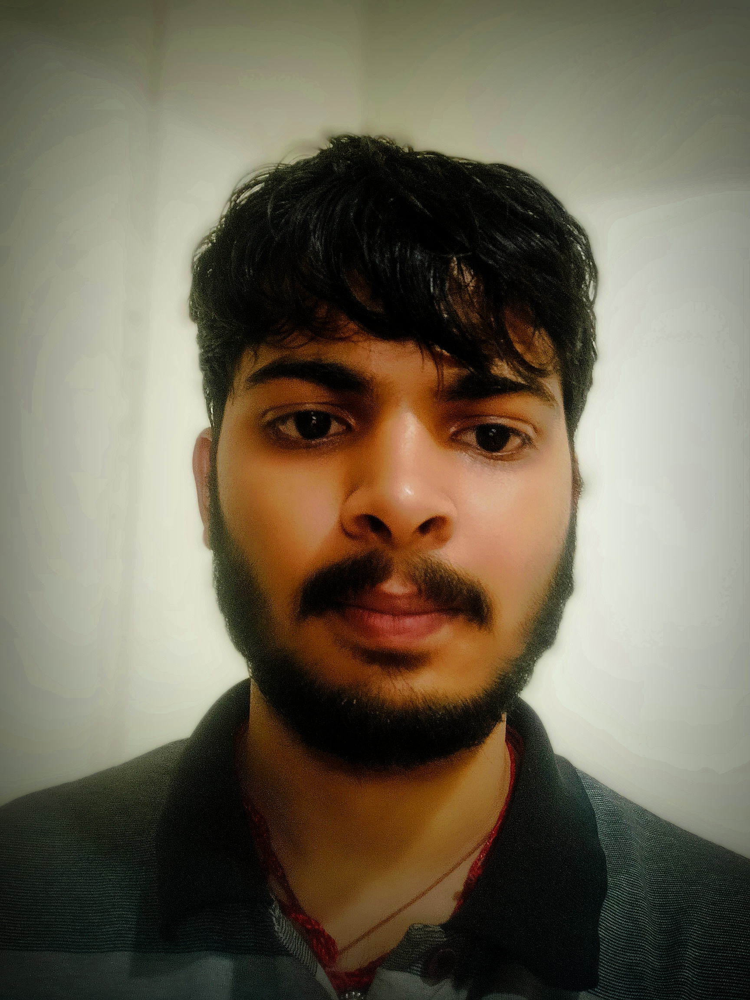

 My name is Divyansh Yadav, and I am from Bihar. I am currently pursuing B.Tech in CSE from VIT Vellore, and my registration number is 23BCT0112. I have always been passionate about software development, electronics, which has driven me to excel academically and work on various innovative projects.
During my academic journey, I have gained proficiency in programming languages like Python, C++, and Verilog HDL, JAVA or tools like MATLAB or GitHub. I have worked on multiple projects, such as designing a 5-bit carry look-ahead adder and implementing a ripple up counter using T flip-flops in Verilog HDL. My ability to collaborate effectively in a team and take ownership of my tasks has helped me achieve positive outcomes in all my endeavors.
I consider myself a highly motivated individual who thrives on challenges and continuous learning. My strengths include analytical thinking, adaptability, and attention to detail. I am also passionate about contributing to impactful projects that solve real-world problems. Looking ahead, I aspire to join an organization where I can leverage my technical skills and knowledge to deliver innovative solutions and grow both personally and professionally.